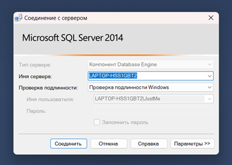

После успешной установки SQL Server нужно подключиться к готовому серверу ресторана (рис. 1).

Рисунок 1 - Пример авторизации в SQL Server
SQL Server настроен. Теперь нужно настроить подключение к базе данных в приложении.